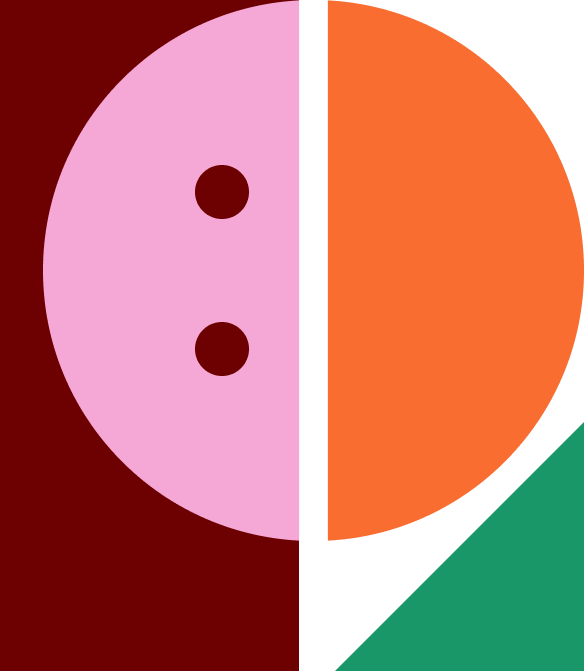
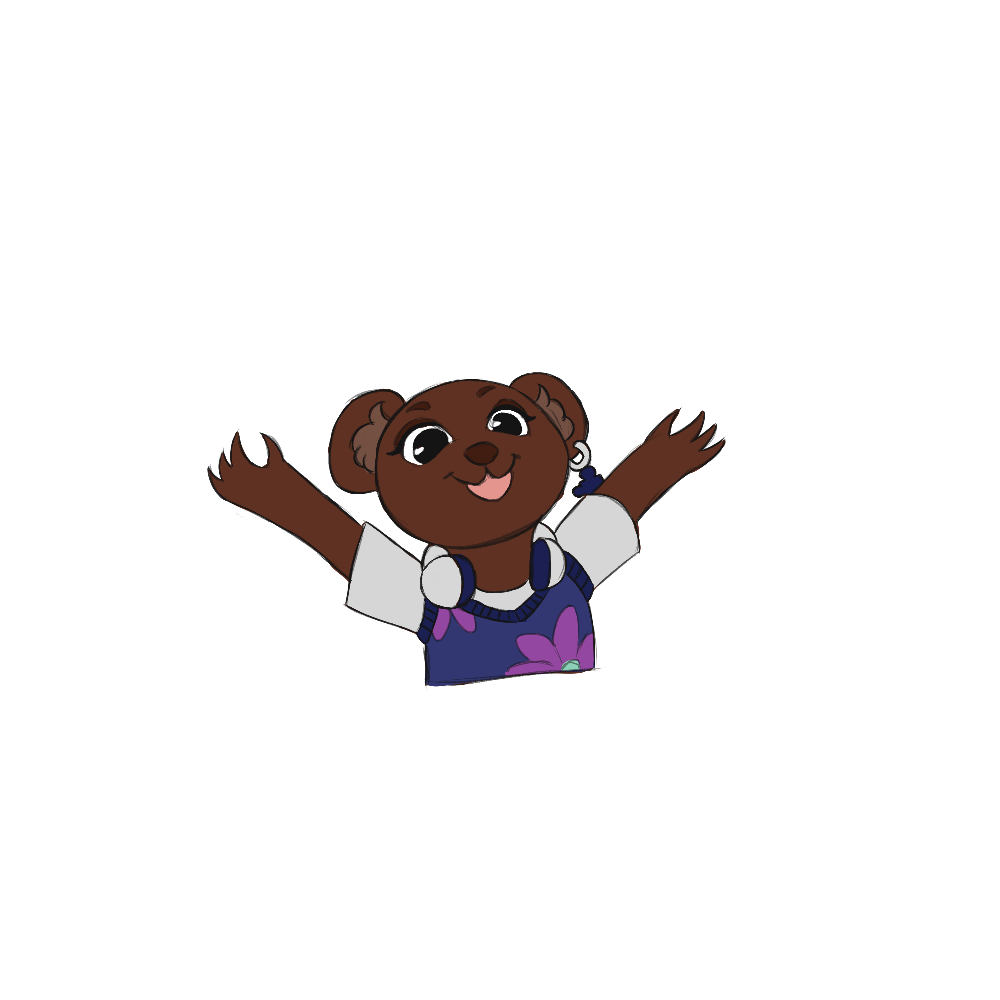
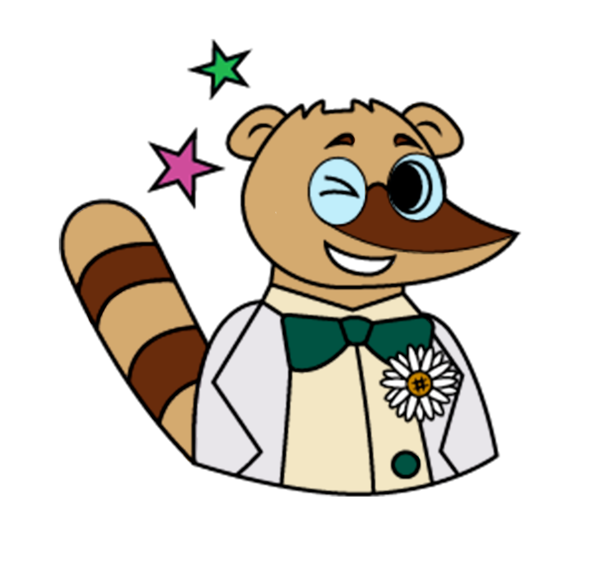
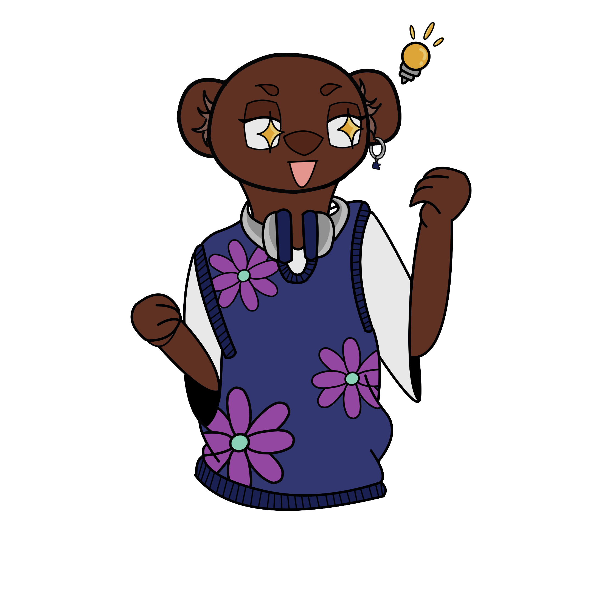
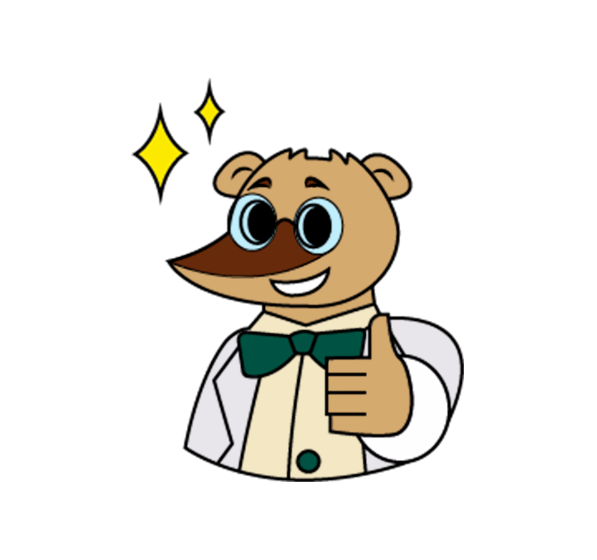

Um guia completo para organizar, estruturar e conduzir sua pesquisa com segurança e eficiência
Acessar Guia
O Guia Iniciante de Pesquisa nasceu da necessidade de popularizar o ensino e a iniciação científica, destinando-se a alunos do ensino fundamental e médio, recém-chegados à universidade e todos aqueles que tenham interesse em realizar pesquisa.
Vale ressaltar que, embora o conteúdo seja direcionado para as áreas da STEM (como evidenciado nos exemplos dos capítulos e na bibliografia), ele pode ser utilizado em qualquer campo.
Todo o material foi pensado para ter acessibilidade. A diagramação desenvolvida é direcionada a indivíduos com dislexia, a paleta de cores foi elaborada para garantir harmonia em casos de daltonismo, e a estrutura do conteúdo foi concebida para proporcionar um entendimento claro em diversos níveis.

Transformar a forma como pessoas conduzem pesquisas através de orientações práticas e acessíveis.

Conhecimento claro e objetivo para qualquer nível de experiência em pesquisa.

Estrutura lógica e bem definida que guia cada etapa do processo de pesquisa.

Suporte contínuo para iniciantes e pesquisadores que desejam qualificar seu trabalho.
Conteúdos práticos e organizados para orientar sua pesquisa em cada etapa.
Aprenda a escolher um tema adequado, delimitá-lo com recorte geográfico, social e de referência.
Descubra técnicas para mapear suas ideias com diário de pesquisa, fichamentos e mapas mentais.
Saiba buscar artigos científicos usando palavras-chave e bases como Google Acadêmico e SciELO.
Entenda a sequência correta: resumo, introdução, literatura, metodologia, resultados, discussão e conclusão.
Aprenda a criar cronogramas, avaliar recursos disponíveis e reconhecer as limitações da sua pesquisa.
Domine a escrita acadêmica com honestidade científica, citações ABNT e trabalho em equipe.
Existem várias formas de fortalecer a iniciativa da ONG Quebra Cabeça: divulgando nosso trabalho, tornando-se voluntário ou contribuindo financeiramente.
Compartilhe nossas publicações, envie para amigos e acompanhe as ações da ONG pelo Instagram. Essa é uma forma simples de ajudar a iniciativa a chegar em mais pessoas.
Ver InstagramQuer contribuir mais de perto? Responda o formulário de voluntariado com suas informações e entraremos em contato para conversar sobre as possibilidades.
Responder formulárioVocê pode ajudar financeiramente com qualquer valor usando a chave Pix abaixo.
O nome exibido na chave é referente ao da fundadora.
Tem dúvidas sobre o projeto, quer propor uma parceria ou enviar sugestões? Use um dos canais abaixo para falar com a ONG Quebra Cabeça.
Enviar e-mail para a ONGAcesse agora o Guia de Pesquisa e transforme sua forma de pesquisar. Tudo que você precisa está aqui.
Acessar Guia